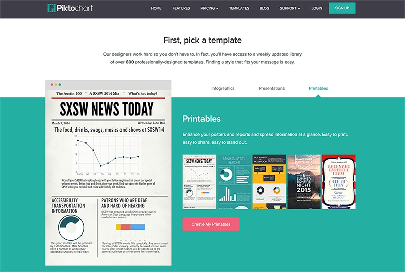
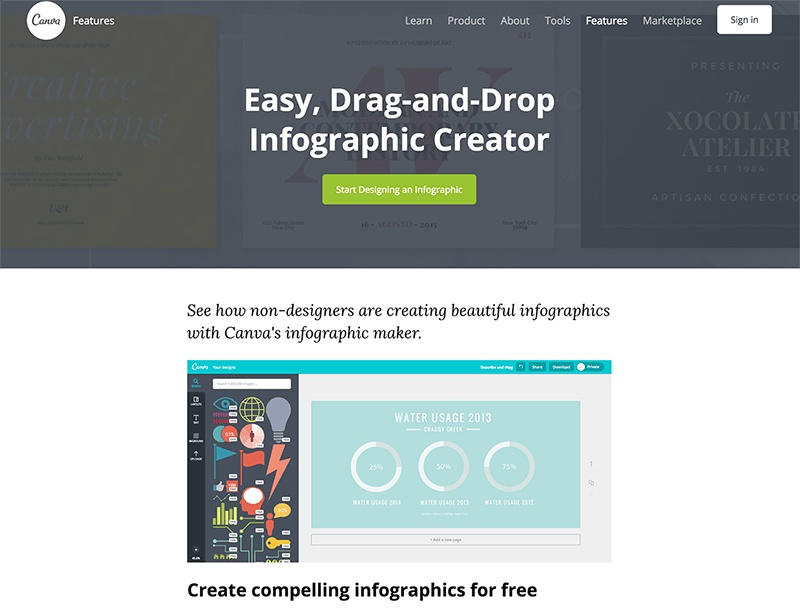
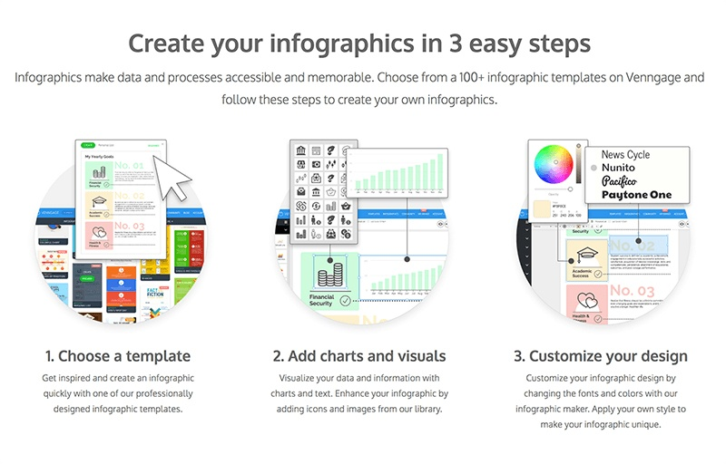
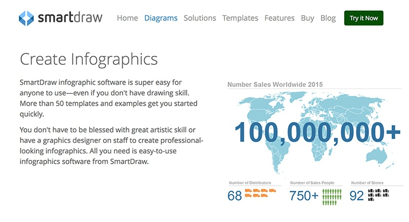
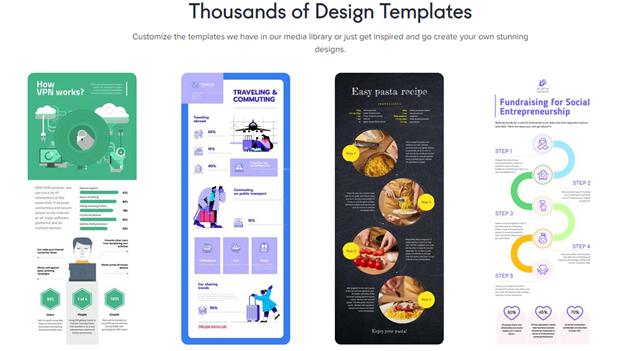

Tools to help you create infographics for your social media marketing are essential to private individuals, to private and public enterprises, and to multinational companies. Numerous options for the customization of presentations are available online, most of which were created by professional graphic designers. Flexible packages for access to the options available for infographic usage are presented by most tools- ranging from free membership to annual subscriptions. These factors are important to any party who wants to communicate information to the public since it saves much time, effort, and money essential to allocate to other tasks at hand.
Enumerated below are five options you would like to consider in selecting your tool to help you create infographics for your social media marketing. Presented in each selection is a short background of the tool. People who established the software, their inspirations behind the brand, locations, and other information on the company might help you pick the best to suit your needs. Short descriptions of the features of the software are also given, and also price ranges for access to the features you might need for your work.
#1 Piktochart
One of the tools to help you create infographics for your social media marketing is Piktochart. This is the brainchild of Ai Ching and Andrea based in Penang, Malaysia in July 2011. The four employees who were working in a warehouse worked round the clock to have finally launched the first beta version of Piktochart in January 2012. From its 3 paying customers on the first day, the company is now serving 3 million users and increasing daily.

As Piktochart grows, it is important to understand the core values of this tool to help you create infographics for your social media marketing. HOPEFUL stands for Humble, Open Up, Passionate, Effective, Fun, User-Focused, and Love. To have these core values helps the entire team be focused on achieving their goals. This firm guide aids the company with their behavior and actions within the workplace, and towards the people, they cater to.
The cost of this tool to help you create infographics for your social media marketing is flexible. Upon registration, the user has the option to use the tool for free or at a cost. Premium packages start at $29 per month, with an annual payment of $290.
Piktochart is proud to say that their tool will empower the user to make the infographic within seconds. The drag-and-drop, the point-and-click feature is a convenience, along with the 400 professionally designed templates, 4000 icons and images, ready-to-use text frames and photo frames, and the easy import of charts and maps from your file.
After you have used this tool to help you create your infographic for your social media marketing, you have the option to share it on the Internet through its built-in social media options. This makes it convenient for the user since it saves time in downloading and uploading. It is also beneficial to the audience since they will also be able to have fast access to your finished product.
#2 Canva
Another tool to help you create infographics for your social media marketing is Canva. Melanie Perkins was studying in 2007 at the University of Western Australia, wherein she also taught students graphic design. She and co-founder Cliff Obrecht launched Fusion Books, which is now the largest school yearbook publisher in Australia, to help students design and create their own yearbooks. Canva came about eventually as the pair realized that their creation could be used in a broader market.

The live statistic counter of this tool is quite impressive. It already has 54,000,000 designs created, 7.5 million users, and 59 million images and counting. It also has a global network of 42 team members from 12 countries in 3 offices worldwide.
Canva is an expert in the simplification of infographic design creation. It houses millions of stock photos, vectors, and illustrations. Users have the option to use preset filters or acquire advanced photo filters for editing. Shapes, icons, and elements are also available by the thousand, as well as a wide array of fonts.
To help you create infographics for your social media marketing, Canva is readily available for use via a web browser or iPad. The mobility allows the user to create infographics at their convenience. This tool is available for free but offers $1 premium images.
#3 Easel.ly
Easel.ly is also an option as one of the most popular tools to create beautiful infographics for your marketing campaigns. This tool was launched in 2012, with its mission “to allow users to create and share visual ideas online, easel.ly”. In 2013, it received the Best Website for Teaching and Learning Award from the American Association of School Librarians (AASL). The recommendation was given for its simplicity, friendliness, and intuitiveness, as a 6th grader could successfully create their own infographic without the assistance of an adult.

This tool has an easy step-by-step guide to infographic creation. It starts with a selection of a theme, followed by the addition of objects, from icons to shapes to text, which can be selected or uploaded by the user. For reference, the homepage of the website itself features numerous infographics which redirect to a pre-set layout for the user’s ease. The software is available for free, and for $3 a month for the Pro version.
#4 Venngage
Another option for tools to help you create infographics is Venngage. They humbly state their story as a daily endeavor to create an awesome design experience to users. They believe that everyone can make data visualization, hence the creation and continuous operations of the site.

There are hundreds of professional templates in this tool to help you create infographics for your social media. The simple drag and drop infographic creator has three steps: first is choosing a professionally designed template, second is the addition of charts, text, icons, and images even from the user’s library, and third is the customization of the design. Upon completion, the publication can be embedded on blogs or websites.
Infographics pricing for this tool has several options which can be upgraded or canceled anytime. The access to themes and templates, charts and icons, and the number and branding of infographics depends on the package selected. Free usage has limited access with branded infographics, Premium monthly package has more access to certain features, and privacy controls and export to PDF and PNG, and the Premium Yearly has a premium to unlimited access to the site’s features.
#5 SmartDraw

SmartDraw could also be considered in selecting a tool to help you create infographics for your social visual content. With its roots back in 1994, it aims for the expansion of people’s effective communication through capturing and presenting information as pictures. SmartDraw Software has over 90,000 unique visitors, and in excess of 3 million installations of its trial version annually.
SmartDraw Software, LCC prides itself as one of the most sophisticated digital marketing organizations globally, therefore making this tool to help you create infographics for your social media marketing trusted worldwide. More than half of the Fortune 500, and over 250,000 private and public enterprises use this software. This is headquartered in San Diego, California.
This tool offers flexible publishing and sharing ways. Your finished product could be integrated with Microsoft Office, sent via email through Microsoft Outlook, and be made into a PDF copy. The share button in ShareDraw allows the user to share their work on social media, make it available online to specified people via email, and posted on their website or blog.
#6 Crello
One of the leading infographic design tools on the market, Crello keeps up with the times and provides users with trendy templates to create unique designs for social media. Feel free to choose among numerous infographic formats – a map, a list, timeline, comparison, and others – and customize it to your individual needs.

Crello online infographic editor is easy to use: You sign up for free, choose a format and a template, and access millions of objects and dozens of features for its tailoring. Once your design is ready, download it to your device or share it on social media via the Crello interface directly.
Wrapping it up
These five tools for creating great-looking infographics for your social media marketing are just some of those available on the web. It is important that in the selection of the tool you are going to use, you go for the one which gives you the most effective and efficient way to send your message to the public. Social media is a powerful channel to learn and create influence in society. Infographics make it easier for that knowledge and influence to be acquired and shared globally.
The people behind these tools understand the importance of your purpose in creating your infographic. Your shared value in effective communication makes both parties empowered to make a difference in this world. Whatever it is which you aim to impart to your audience will be taken into consideration for its truthfulness, and their confidence in you. The power to create infographics is such a modern trend, but the essence of imparting information is true for all time.
Leave a Reply